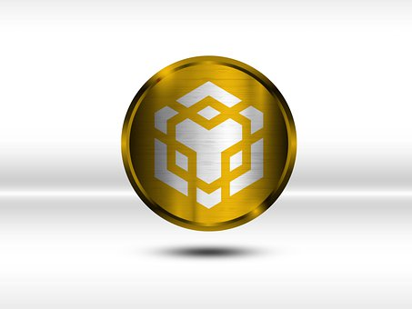

En este vídeo veremos como iniciarse en la herramienta de Tradingview, desde lo más básico hasta lo más complejo que se quiera llegar.
Se mostrará como configurar y tener una personalización propia y sentirse agusto realizando los trabajos que competa en cada momento.
Un canal de youtube desde donde se puede acceder a una gran variedad de grabaciónes y seguir formándote hasta donde quieras llegar.
Hay material para iniciarse desde cero en el mundo del trading intradía, hasta operaciones de corto largo plazo.
Aquí veremos un canal donde se mostrarán análisis diarios de criptomonedas y altcoins, noticias referente al mundo blockchain
y cualquier otra noticia que haga afectar al mercado cripto.
Muestra un análisis del mercado tradicional y del mundo cripto. Muestra distintos puntos de vista y opciones de dirección del mercado.
Ofrece formación y analiza diferentes noticias que puedan afectar a largo y corto plazo a nuestra cartera financiera.
Analiza distintas proyectos en busca de oportunidades de inversión y realiza tutoriales de plataformas.
Veremos variedad de información respecto a como invertir nuestros ahorros, como hacer que crezcan corriendo un mínimo de riesgo
y obteniendo grandes beneficios que nuestro banco no ofrece. Nos da la oportunidad de crecer como inversor desde cero, y ser rentable en cada inversión realizada.
Es fácil de entender ya que empieza desde lo más básico hasta avanzado.

Es un tutorial referente al exchange Binance, donde se podrá ver como abrir una cuenta, como gestionar nuestro portafolio hasta como operar.
Muestra las distintas órdenes que proporciona la plataforma y como usarlas correctamente comprando y vendiendo criptomonedas.
Ofrece distintos tutoriales específicos para cada apartado de la plataforma, como realizacón de staking flexible o bloqueado,
colocar órdenes de compra y venta para no tener que estar pendiente de ello, el apartado p2p, incluso la formación que ofrece el mismo exchange.